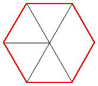
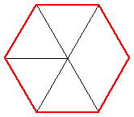
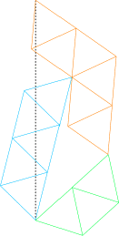
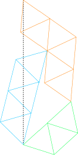
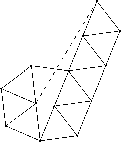
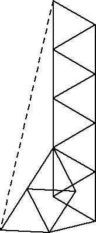

|  |  |
|  | |
Here is an easier problem. For each positive real number x, define R(x) to be the smallest number of rods that can form a rigid structure so that the distance between 2 points (which are endpoints of rods) is x. So R(1)=1 and R(√3)=5. What is the value of R(√n) for integer n? What sort of x values have finite values of R(x) ?
Andrew Bayly managed to brace the pentagon with 151 rods., then 84 rods, then 77 rods. I improved his latest attempt so that it only requires 75 rods:
Martin Gardner says, in his "Sixth Book of Mathematical Games", that T. H. O'Beirne managed to find a rigid pentagon using only 69 rods, but he didn't give the solution. Many thanks to Mike Reid for pointing this out. Reid also conjectured that rigidifiable distances are precisely the constructible distances.
This turns out to be false. Les Reid (no relation) showed how to trisect an angle. His mechanism is shown below. A similar mechanism can n-sect an angle, showing that all regular n-gons can be made rigid! He conjectured that the braceable distances are the algebraic numbers, and then found the reference: "Distances in a rigid unit-distance graph in the plane" by Hiroshi Maehara in Discrete Applied Mathematics 31 (1991), 193-200.
I can make a rigid octagon with 45 rods:
I can make a rigid dodecagon with 51 rods:
And I can make a rigid decagon with 99 rods:
The smallest known numbers of rods needed to make rigid regular n-gons are:
| n | 3 | 4 | 5 | 6 | 7 | 8 | 9 | 10 | 11 | 12 |
|---|---|---|---|---|---|---|---|---|---|---|
| rods | 3 | 19 | 31 | 11 | 59 | 31 | 51 | 55 | 155 | 49 |
In 2002, I was contacted by Serhiy Grabarchuk who informed me that Andrei Khodulyov worked on this problem years ago and beat all of the best known results! His braced square uses only 19 rods, and is shown below.
His braced pentagon uses only 31 rods:
His braced heptagon uses 79 rods:
His braced octagon uses 31 rods:
His braced nonagon uses 51 rods:
His braced decagon uses 55 rods:
His braced 11-gon uses 155 rods:
His braced dodecagon uses 49 rods:
In 2019, Watanabe Masaki sent me a solution for the heptagon using 59 rods:
In 2020, Ed Pegg sent me this solution for the heptagon using 42 rods, and claims this is still rigid if 2 adjacent internal vertices are removed, leaving only 35 rods.
Joseph DeVincentis submitted many values for R(√n), some of which were not optimal.
Here are the smallest known values for R(√n):
| n | 1 | 2 | 3 | 4 | 5 | 6 | 7 | 8 | 9 | 10 | 11 | 12 | 13 | 14 | 15 | 16 | 17 | 18 | 19 | 20 | 21 | 22 | 23 | 24 | 25 |
|---|---|---|---|---|---|---|---|---|---|---|---|---|---|---|---|---|---|---|---|---|---|---|---|---|---|
| R(√n) | 1 | 17 | 5 | 7 | 15 | 19 | 9 | 23 | 11 | 23 | 19 | 13 | 13 | 31 | 23 | 15 | 27 | 29 | 17 | 31 | 17 | 33 | 25 | 33 | 19 |
The distances that arise in the grid of equilateral triangles are of the form √(a2+ab+b2), and it appears that this is the most economical way of achieving these distances. In particular, Joseph DeVincentis suspects that R(n)=4n-1.
One can also ask about R(1/√n) for various n. For example, it appears R(1/2)=15.
In 2004, Gavin Theobald sent me improved solutions for making the distance √n rigid. Some of his solutions are shown below.
 20
20Gavin Theobald also sent me a counterexample to the conjecture that √(a2+ab+b2) is best achieved with a simple grid of triangles. Here is distance √2029 the new improved way:
In 2006, Erik Leppen sent me an improved solutions for making distance √10 rigid with 23 rods, and √23 rigid with 25 rods, as shown below.
| 10 | 23  |
Ed Pegg asks how many rods are required to brace a cube in 3 dimensions. I can do it with 36 rods:
If you can extend any of these results, please e-mail me. Click here to go back to Math Magic. Last updated 10/1/06.